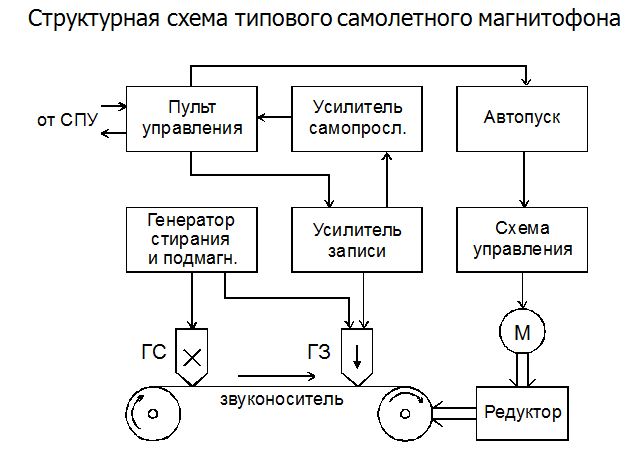
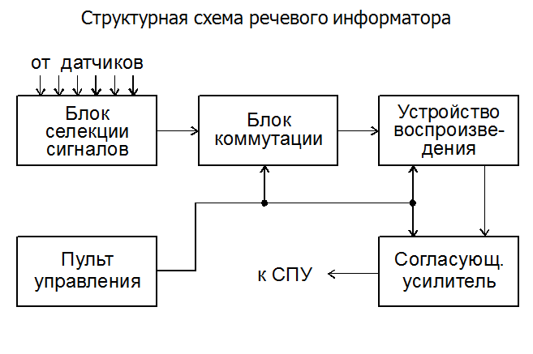
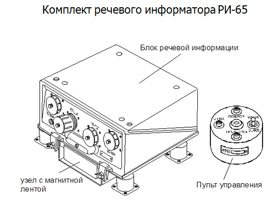

Бортовые системы записи речевой информации – магнитофоны самолетные. Аппаратура речевых сообщений
Самолетные магнитофоны обеспечивают запись переговоров членов экипажа между собой, с экипажами других самолетов, участвующих в совместном полете, а также с аэродромами и наземными пунктами управления. Такая документированная запись позволяет объективно анализировать правильность действия экипажа самолета, содержание команд, поступающих с наземных пунктов управления и передаваемых с летательного аппарата. Эта информация используется при разборе полетов, а также в случае аварии или катастрофы самолета. Для сохранения записанной на магнитофоне информации принимаются следующие меры: магнитофон устанавливается на самолет в специальный бронированный контейнер (бронекожух), защищенный от больших ударных воздействий, запись осуществляется на достаточно прочный проволочный носитель, обеспечивается резервирование путем установки на самолет двух магнитофонов и т.п.
В настоящее время в ВВС применяются бортовые магнитофоны типа МС-61, П-503, П-507, МАРС-БМ.
Принцип работы любого магнитофона состоит в намагничивании носителя информации сигналами регистрируемой речи, сохранении этого состояния звуконосителем сколь угодно долго и возможности последующего воспроизведения сделанной записи. Бортовой магнитофон работает только в режиме записи. Воспроизведение записанной информации производится с помощью специальных наземных магнитофонов.
Пульт управления размещается в кабине летчика и обеспечивает дистанционное (на расстоянии до 30 м) включение, выбор режима работы и контроль за работой магнитофона, подключение к нему СПУ, микрофона (ларингофона), авиационной гарнитуры. На одноместных самолетах пульт управления магнитофона не устанавливается. Магнитофон в этом случае включается в режим непрерывной записи с помощью специального тумблера, размещенного в кабине летчика.
Предусматривается два режима работы: непрерывной записи или с автоматическим включением записи. При непрерывном режиме магнитофон работает постоянно и всегда готов к записи. В режиме автопуска он включается напряжением, поступающим от блока автопуска каждый раз с началом разговора, и исчезает, если речевой сигнал от СПУ отсутствует. Режим непрерывной работы является, как правило, основным, так как при этом обеспечивается уверенная запись всей информации без потерь отдельных звуков, как это имеет место в режиме автопуска, хотя в первом случае будет больше расход носителя записи.

При включении питания протяжный механизм обеспечивает движение звуконосителя в магнитном поле стирающей и записывающей головок с постоянной скоростью. Записывающая и стирающая головки представляют собой кольцевые электромагниты с зазором, в котором создается мощное магнитное поле. Вначале носитель информации проходит в магнитном поле стирающей головки ГС, на которую с генератора стирания подается переменное напряжение ультразвуковой частотой 30 кГц. Высокочастотное подмагничивание применяется для уменьшения нелинейных искажений при магнитной записи.
Происходит стирание ранее сделанной записи – размагничивание носителя информации. На записывающую головку ГЗ с усилителя записи подается электрическое напряжение, полученное в ларингофонах или микрофонах путем преобразования звуковых сигналов. Эти сигналы поступают от СПУ через пульт управления и усилитель записи. Усилитель записи обеспечивает усиление и автоматическую регулировку уровня сигнала.
Схема управления обеспечивает коммутацию цепей питания магнитофона, управление протяжным механизмом основного аппарата, запуск резервного магнитофона при окончании или обрыве носителя и других неисправностях основного аппарата. От этой схемы включается индикация на пульте управления, сигнализирующая о неисправности магнитофона. Для контроля работоспособности магнитофона предусмотрено самопрослушивание записи с помощью усилителя самопрослушивания.
Блок записи обеспечивает транспортирование звуконосителя и запись на него речевой информации и сигналов времени. Он включает в себя электродвигатель, редуктор, устройство привода вращения катушек со звуконосителем, каретки с магнитными головками записи и стирания и другие элементы кинематической схемы. Запись переговоров членов экипажа, а также передаваемых и принимаемых сигналов бортовыми радиостанциями производится через СПУ. Этот режим является основным. Запись с микрофона используется, главным образом, для контроля работоспособности магнитофона. Воспроизведение записи осуществляется на специальных наземных магнитофонах типа МН-61.
Бортовой магнитофон МС-61, устанавливается на самолетах Ту-22М3, Ил-76МД, Су-24, вертолетах Ми-8, Ми-24 и многих других.
Особенностью магнитофона МС-61 является применение в качестве носителя информации тонкой металлической проволоки диаметром 0,05 мм.
Самолетный магнитофон МС-61 имеет следующие технические характеристики:
• длительность непрерывной записи не менее 5,5 часов;
• линейная скорость носителя записи 145–195 мм/с;
• носитель записи проволочный с диаметром 0,05 мм;
• потребляемая мощность не более 20 Вт;
• масса магнитофона около 4 кг.
Аппаратура речевых сообщений
Речевые информаторы обеспечивают оповещение членов экипажа и оператора наземного командного пункта (через бортовую радиостанцию) об аварийных ситуациях и опасных режимах в полете и выдачу им рекомендаций для принятия правильного решения. Они могут быть также использованы для воспроизведения стандартных команд, поступающих от быстродействующей аппаратуры связи. Применением на борту летательного аппарата речевых информаторов достигается повышение безопасности полетов и снижение аварийности. Летчику в процессе полета приходится решать большой объем задач, связанных с пилотированием самолета и применением оружия.
Особенно велика нагрузка на его зрительное восприятие, так как на приборной доске самолета расположено большое количество приборов от различных систем и агрегатов, показаниями которых он пользуется для поддержания заданного режима полета. Кроме того, летчик должен внимательно наблюдать окружающую обстановку, изображения на экранах индикаторов в процессе поиска цели, прицеливания и применения оружия. Установлено, что слуховое восприятие летчика имеет определенный резерв. Поэтому применение речевых информаторов, особенно в экстремальных ситуациях, весьма целесообразно. Речевой информатор представляет собой специальный магнитофон с записанными на его звуконосителе короткими сообщениями (инструкциями), и обеспечивает по сигналу с вынесенных датчиков автоматический выбор и воспроизведение соответствующих сообщений. Бортовые информаторы работают только в режиме воспроизведения.
Запись осуществляется с помощью специального наземного магнитофона, который является одновременно контролирующим прибором. Многоканальная запись производится параллельным размещением нескольких звуковых дорожек по ширине ленты. Для воспроизведения применяются специальные магнитные головки, объединенные в блоки по 6 или 8 штук. Количество записанных команд может быть различным (16 или 48) в зависимости от типа речевого информатора.

Сигналы с датчиков состояния агрегатов самолета в виде постоянных напряжений поступают в блок селекции сигналов, в котором производятся их нормализация и классификация по приоритету прохождения. Затем под действием этого сигнала в блоке коммутации производится подключение на вход усилителя воспроизведения соответствующей данному каналу магнитной головки и включение электродвигателя для протяжки магнитной ленты в нужном направлении.
Электрические сигналы звуковой частоты, снимаемые с головки воспроизведения, после предварительного усиления в согласующем усилителе поступают на телефоны летчика через СПУ. После прекращения воспроизведения команды электрическая схема и механизмы аппарата возвращаются в исходное состояние.
Если на вход речевого информатора поступают одновременно сигналы от нескольких датчиков, то с помощью блока коммутации обеспечивается поочередное их прохождение в порядке возрастания их нумерации (например, 2, 13, 34 и т.д.). В связи с этим при записи команд дорожки распределяются по важности сообщений, т.е. наиболее важные сообщения записываются на дорожках с наименьшим порядковым номером.
С пульта дистанционного управления производится включение речевого информатора, включение на повторное прослушивание сообщения, проверка работоспособности в полете и т.д.
В ВКС широко применяются речевые информаторы типа РИ-65, П-591, АЛМАЗ и некоторые другие.

Речевой информатор РИ-65, применяемый в авиационных системах связи, имеет следующие основные технические характеристики:
• количество каналов воспроизведения до 16;
• длительность одного цикла работы (воспроизведение, возвращение в исходное состояние) не превышает 12 с;
• разборчивость слов не хуже 95 % при прослушивании в акустических шумах до 120 дБ;
• напряжение электропитания +27 В.